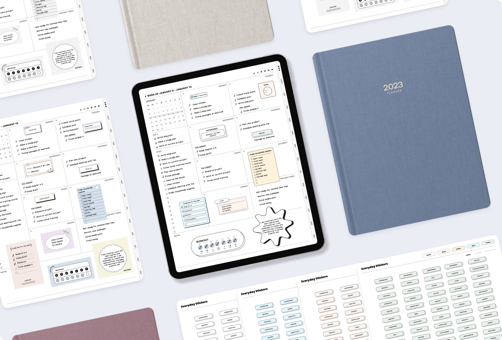
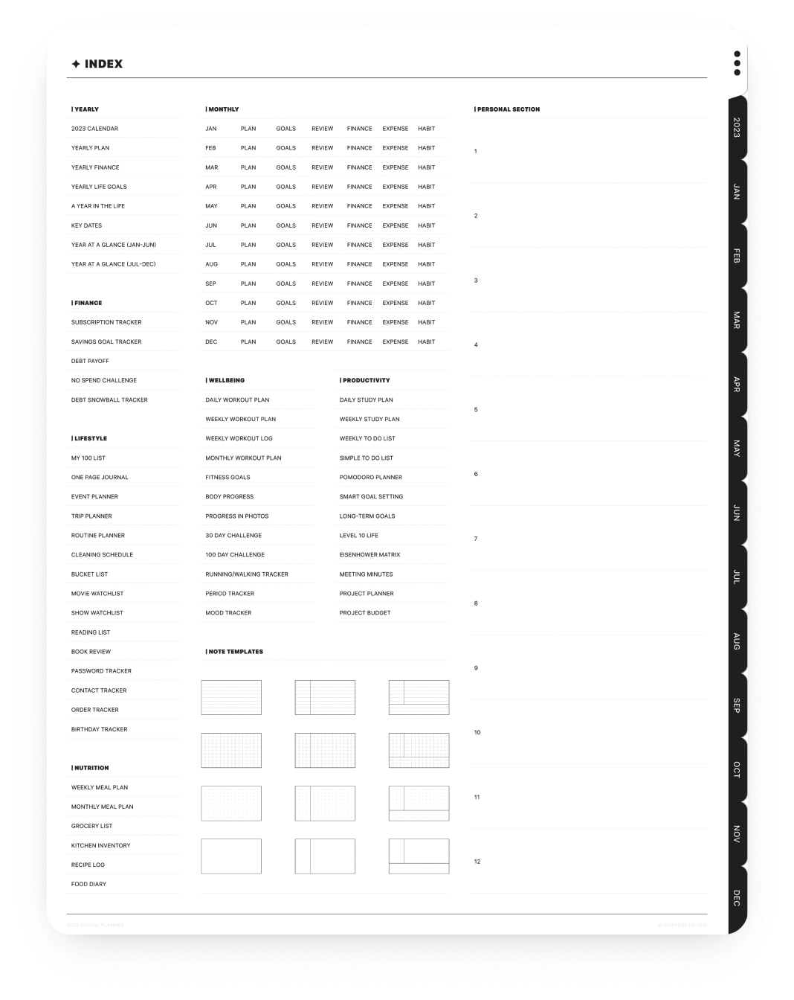

My story of designing WeWave ❋ My story of designing WeWave ❋ My story of designing WeWave ❋ My story of designing WeWave ❋ My story of designing WeWave ❋ My story of designing WeWave ❋
WeWave is a mobile and desktop website that provides the world’s first draw to search engines for stocks and cryptos

My Role
In my role as the UI and Visual designer for WeWave, I was responsible for leading the design of both the mobile and desktop web versions of the product. I worked with a team of product designers, product managers, researchers, financial advisors, and engineers to uncover insights and translate concepts into features that address user needs.
Team
Adwin Jahn, Founder, Software Engineer
Eugene Jahn, Co-Founder, Software Engineer
Yetta Jiang, UI/UX Designer
Aid Idrizovic, Software Engineer
Sara Valenzuela, Brand Marketing Lead
Iris Lin, Project Manager
Tai-Shain Pei, QA Manager
Eddie, Product Researcher & Business Analysis
Timeline
2021 - 2022
Deliverables
Concept Development
Wireframe
User Experience
User Interface
Visual Design
Tools
Figma
Adobe Illustrator
Adobe Indesign
Adobe Photoshop
Adobe After Effects
Adobe Premiere Pro
How technology makes life easier?
Technology has the potential to make life easier in many ways by automating tasks, providing access to information and resources, and making it easier to connect and communicate with others. In the case of WeWave, a mobile and desktop website that provides the ability to search for stocks and cryptocurrencies using drawings, technology is being used to provide a new and innovative way for users to access the specific information they are looking for. This could potentially save time and make it easier for users to find the data they need to make informed decisions.
Define the Problem

The Challenge
At the beginning of the project, we were a team of 5 people that wants to build the first draw to search stock screener for traders on the stock market. The idea came for the AI experiment “QuickDraw” made by Google. This involved designing the WeWave website from zero to finish and how we could use the idea to deliver the product that we wanted to build. With few-month timelines, we focused on delivering the draw, search, and match technical patterns for the entire US stock market and all cryptocurrencies.
The Approach
Our lack of financial knowledge of the stock market we needed to understand the nature of how traders’ minds and what’s the culture of the stock market quickly. We approached all aspects of the project collaboratively and spent most of our time working with experienced traders and joining the stock market community interacting with traders.
Throughout the project, we conducted user research and defined the concept of the design. This approach was to understand the fundamentals and technical process.
To access our prospective users, we ran online user interviews with experienced and non-experienced traders across the world. This allowed us to quickly identify the day-to-day challenges of users’ pain points.

The Process
The discovery
We conducted user and market research to drive our planning phase.
Is it more effective to boost productivity using digital interactive products compared to traditional paper planners?
As part of my research on users’ needs, I conducted an analysis of positive and negative feedback left by customers on other sellers’ product reviews.
User Analysis
Age: 16+ years old from high school students to professionalsn
- Users like easy navigation
- Users like to have a fast loading file
- Users like nice and clean user interface
- Users like to have add-ons that come with the planner
The goal
My goal is to create a product that helps to reduce paper waste and ultimately protects trees. The overuse of paper products is a major environmental concern, as it leads to deforestation and habitat destruction. With the rise of technology, we now have the ability to create tools that are just as effective. If not more so, than traditional paper planners. By using digital planners, we can eliminate the need for paper and reduce the negative on the environment and contribute to a more sustainable future.
Ideation
Prior to beginning work on the planner design, I began by sketching out the important features on the page. This helped me to visualize the layout and user experience, and allowed me to identify any potential issues before moving on to the design phase.

Planner Map
To optimize the layout design of the all-in-one feature planner for my shop, I created a product structure flow. This approach allowed me to gain a more comprehensive understanding of the product's structure and helped me to prioritize the layout design as a key component of the planner's overall user experience.
The requirements
- Easy navigation
- Fast loading file with small size file
- It should be compatible with most PDF annotation apps
- Minimalist designs
The Final
The All-in-One Planner
The end result of the project is an all-in-one interactive digital planner that is compatible with any PDF annotation app. This planner is designed to be a user-friendly and efficient tool that provides a streamlined planning experience. With its interactive features and compatibility with various PDF annotation apps, users can easily access and utilize the planner from any device or platform.

Start here
The index page for the planner was designed to be the primary gateway for users to navigate to different pages and templates, with an intuitive layout and user-friendly interface for easy access.
Side tabs
In addition to the main design elements, I also incorporated side tabs into the planner, enabling users to easily switch between different month's plans


Layouts
To achieve a high level of personalization and reusability, the planner includes a variety of different layout options for users to choose from. These layouts are designed to accommodate a range of planning needs and preferences, allowing users to customize their planner to suit their specific requirements.
Add Ons - Planner Stickers
During the research process, it was found that many users desired additional features for their planners. In response, I designed digital stickers that could be easily duplicated and written on by users. This add-on provides users with a customizable and personalized touch to their planner, allowing them to enhance their planning experience in a unique way.


Add Ons - Planner Font
I also designed typography specifically for digital planning. This font was developed with a focus on clean and neat presentation, optimized for use in digital formats. Its design ensures that the text is easy to read and provides a visually appealing aesthetic that enhances the overall user experience.
The Launch
Go On Live
After one month of diligent preparation, I took the leap and launched my online shop. The visitors’ rate increased by 2880% in just six months with a conversion rate of 4.4%
Etsy Shop
I chose Etsy to open my online shop because it has a large community of buyers interested in unique items, is user-friendly and easy to set up, and offers features like built-in SEO and analytics to promote and track my progress.
My Etsy Shop

Online Store
After a successful year on Etsy, I decided to open my own website. It gives me more control over my brand and customer experience and allows for greater flexibility in marketing and promotions. Though it comes with challenges, I believe it will lead to a stronger and more sustainable business.
My StoreOver 1,000 postive reviews on Etsy
The Reflection
What I learn from this
Through the process of building a startup, I've come to learn invaluable lessons. To be honest, I never imagined myself as a business owner, and the challenges I faced were immense. I dedicated long hours to work, sacrificing leisure activities like watching TV or playing games. Yet, the rewards were worth it. Building everything by myself was far from easy, but the experience taught me not only about product design but also the intricacies of running a successful business.
Here comes more
IvoryDigitalHub continues to experience growth and expansion, with new products being developed and introduced every month. Looking ahead, the next milestone is to attain 100,000 followers on my social media accounts. This represents an exciting step forward in our ongoing efforts to connect with and engage a wider audience. I remain committed to providing innovative products and delivering value to our customers, and this is just one of the many ways we're striving to achieve that goal.